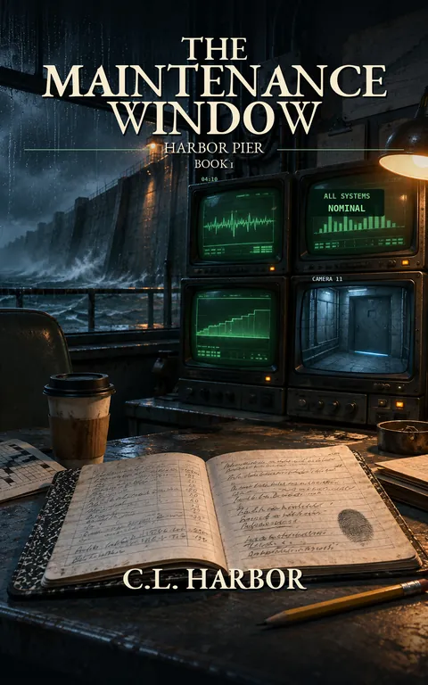

The Maintenance Window
Harbor Pier, A Harbor City Book: #1
Every night at 04:10, Harbor City corrects the record.
Kindle Unlimited reader? Membership eligibility for individual books is shown on Amazon. The format links above are paid affiliate links.
Purchase links open Amazon. Format availability is taken from the public catalog record.
What is on file
Every night at 04:10, Harbor City corrects the record.
Dale Pitkin has spent eleven years watching screens that never change.
Night shift. Seawall Monitoring Station 7. Log the data. Don't ask questions.
The system tells him when something is wrong. And when the system says WITHIN ACCEPTABLE VARIANCE, that's what he writes down.
Until one Tuesday night, the sensors turn amber.
Read the complete filed description
And don't turn back.
The ocean isn't responsible. Neither is the weather. The manual has a chapter for this. Dale read it once, badly, and never again.
But the manual assumes the sensors eventually reset.
These aren't resetting.
Then a security camera displays a date that doesn't exist. A sealed maintenance door begins pulsing with blue light. And when Dale finally requests an inspection, the system responds by erasing every trace of what he saw.
ALL SYSTEMS NOMINAL.
Every night, the records become perfect.
Every night, the wall keeps doing something it shouldn't.
And the only evidence Dale can trust is a ninety-nine-cent composition notebook that doesn't have firmware, doesn't accept updates, and doesn't know how to lie.
Now, with his coworkers behaving strangely and the institution offering him a suspiciously convenient promotion, Dale must decide how much truth a man can afford to keep.
Because something very old is testing Harbor City's Seawall.
And the system isn't malfunctioning.
It's maintaining exactly what it was built to protect.
THE MAINTENANCE WINDOW is Book 1 of Harbor Pier, a series of interconnected speculative mysteries set inside the machinery of Harbor City. A darkly funny story of institutional denial, impossible records, and one ordinary man who makes the extraordinary decision to keep noticing.
The anomaly has been logged. The acceptable variance has been calculated. The notebook is still open.
Further material may surface.
No connected records are currently listed for this entry. Connections are added only when the archive can support them, and not merely because two stories share a city.
Request filing notices ↗